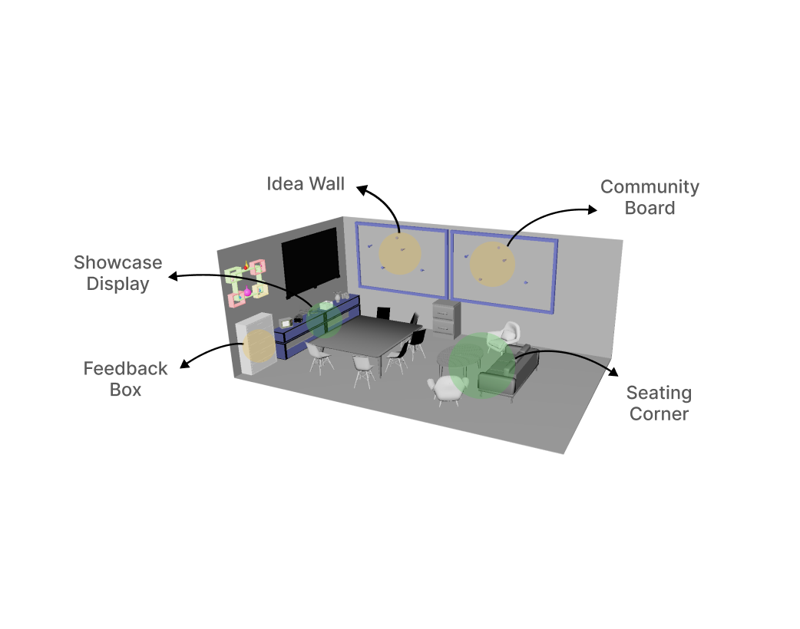
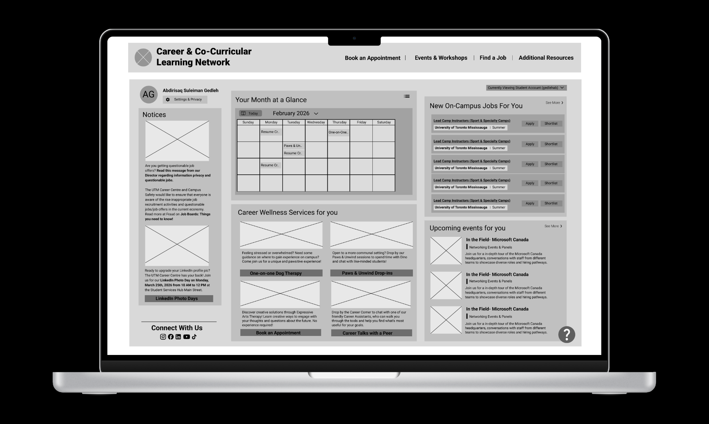

Community Corner @ UTM Makerspace
UX Designer · Research Synthesis · Usability Testing Lead
View Summary → View Process →UX Designer · Research → Prototype → Iteration
I’m a third-year CCIT & TCS student at the University of Toronto, focused on UX design. I enjoy turning messy problems into systems by mapping end-to-end flows, prototyping quickly, and iterating through usability testing.
UX / Product Design Internship · Open to all work arrangements and locations
A selection of projects exploring clarity, flow, and usability across physical and digital experiences.

UX Designer · Research Synthesis · Usability Testing Lead
View Summary → View Process →
UX Designer · Journey Mapping · Developer Handoff
View Summary → View Full Process →Designing intuitive, structured user journeys that make next steps obvious.
Turning messy input into actionable insights and clear design directions.
Refining designs through testing, feedback, and focused improvements.
UX research, interaction design, user flows, prototyping, usability testing, information management.
Tools include Figma, FigJam, Adobe Suite, HTML/CSS, and Google Workspace.
Interested in internship opportunities, collaboration, or design conversations?
Go to Contact →